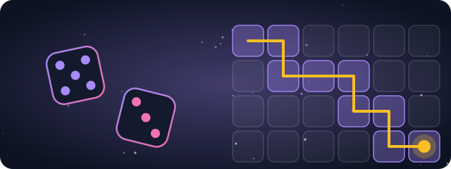

Games where the mathematics holds the whistle.

Plain Question #8
A 2026 re-costing puts breaking one Bitcoin key inside its confirmation window at under half a million physical qubits. The same page notes a 2022 estimate, under the same assumptions, put this at 1.9 billion. Should the half-million figure be treated as the settled number from here on?
The part you play
Most explainers ask you to take their word for it. Here the mathematics holds the whistle: where a game has a par it is a proven minimum (or is labelled "best known"), and every probability on screen is computed rather than chosen by a designer. Two of the machines now have a Versus the Machine mode, against a computer that solved the board before you sat down.
Two ways in. The Solver's Path is the campaign: five fractures, six characters, a map and a save file. The Arcade is the same machines with the story switched off, so you can walk straight to the one you want.
Play The Solver's Path the story Enter The Arcade
No account and nothing to install. Progress lives in this browser, and a short code carries it to another device.